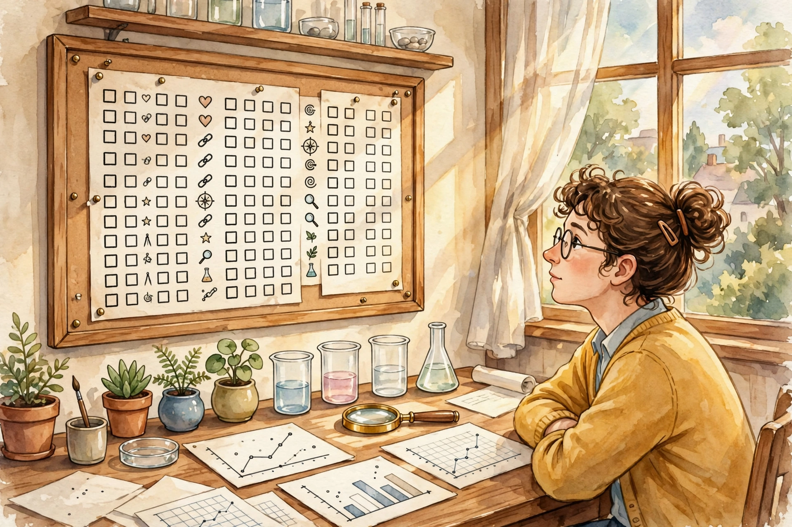

The Diary Of A CEO · Dating Instruction · Episode 5 · Companion
Date Like
a Scientist
Logan Ury brings research tools to romance: attachment theory, the anxious avoidant loop, the 37 percent rule, and the post-date 8. This companion follows the full episode, section by section.

Illustration. Dating like a scientist: curious, methodical, honest about the data. AI-generated watercolor, made for this page. No text appears in the image.
Reading guide. Each nugget separates SOURCE FACT (what Ury said) from INTERPRETATION (why it matters, the transferable principle). Charts name their source line.
Watch. The official episode video. Use the chapter menu above to jump to any section of this companion as you listen.
The Wisdom Index: every nugget in this companion
Part 1
The Burning Man Story
Logan Ury opens with her own wreckage. A perfect week at Burning Man, emotions at full flood, and the certain feeling that intensity on her side meant intensity on his. Back in the real world, he wanted nothing to do with dating her. She cried on a friend's couch, unable to see why someone would not want what felt so strong.
Looking back, she names it: she was anxiously attached, he was avoidant, and they ran the "anxious avoidant loop" instead of a relationship. Her line about the aftermath is self aware and funny: "I put that Harvard degree to work", as if love were a thesis defense. Effort cannot argue a person into wanting you.
Nugget 1 · The loop
The loop is not love
Source fact. Ury describes her Burning Man pairing as an anxious avoidant loop: she chased, he withdrew, and both mistook the cycle for love.
Interpretation: why it matters. Intensity feels like significance. The nervous system cannot tell a roller coaster from a destination.
Interpretation: the principle. When the pattern repeats across partners, the partner is not the variable. Your attachment is.
Part 2
Attachment Theory in Ten Minutes
Ury gives the fastest honest version of attachment theory on record. In the 1960s, psychologist John Bowlby watched mothers leave babies alone in a lab room and return. Some babies cried on and on after the return: anxious. Some calmed the moment they were held: secure, wanting closeness and trusting it. Some showed distress signals but ignored the returning mother: avoidant, braced for abandonment and refusing to need.
Childhood patterns surface in adult romance. The anxiously attached fear you will leave and chase closeness to prevent it. The avoidantly attached fear you will smother them and manufacture distance to stay safe. The securely attached want intimacy and independence at once. Ury calls the secure the heroes of the relationship world.
Then the cruel arithmetic. About 50 percent of people are secure, which sounds hopeful, except the secure pair off and stay paired. The dating pool skews anxious and avoidant, and they find each other and lock into the loop. Her version of love says you will leave so she must chase. His version says you will smother so he must flee. Both call it love until one of them gets secure or dates someone secure and sees the alternative.
The trap has a mechanism: the partial reward schedule. Not knowing whether you will get what you want grips the brain the way a slot machine grips it. Brains love uncertainty. But the excitement that hooks you is not the calm that keeps you.
The dating pool problem
Hover any slice for detail. Half the population is secure, but the pool you swim in is not.
Source: episode transcript, attachment section. Interpretation: the pool skew is Ury's stated logic. The episode gives no numeric split for the pool.
Nugget 2 · The pool
Date the secure
Source fact. Ury says secure people pair off, leaving a pool heavy with anxious and avoidant daters, and advises choosing secure partners with continuous interest.
Interpretation: why it matters. Your sample comes from a biased pool. The fireworks you keep finding are a selection effect, not a law of love.
Interpretation: the principle. Correct for the sample. Boring calm from a secure person beats exciting chaos from a familiar wound.
Part 3
The Reformed Avoidant
Chris turns the lens on himself. For the first 25 years of his life he was avoidant, raised in a house where relationships looked like prison, and he ran from everyone interested in him. Then he met his girlfriend, who sits between secure and anxious: a calm communicator who says let us talk about it instead of screaming.
Being with her eased him out of the cycle, slowly. The triggers still fire. He describes a date night beat by beat: he drifts, she notices and pecks for attention, then goes quiet and annoyed, he asks why, she names something from seven minutes ago, and he wants to grab his bag and get a hotel. His new script is a sentence in his head: do not leave the house. Meanwhile she wants to chase and close the distance, the exact move that makes him want more space.
Ury names the physiology. Cortisol rises. Fight or flight engages. In that state nobody can have the conversation. The fix is a break with a promise, not a door slam. Say you see the upset, say you need minutes to regulate, say you will return to it. For the anxious side she offers two tools. Distraction with a real alternative, like texting a friend instead of him. And disconfirming evidence: state the story in your head, then state a kinder alternative with equal evidence, and watch the panic lose its monopoly.
Part 4
The Secretary Problem
For maximizers, the people who cannot stop searching, Ury brings math. She credits the book Algorithms to Live By for the secretary problem, from optimal stop theory. You must hire one secretary from one hundred candidates, interviewed in order, yes or no on the spot, no going back. How many do you sample before you start choosing.
The answer: 37. Interview the first 37 percent and hire no one. Note the best of that group. She calls her Jenny. From candidate 38 on, hire the first person better than Jenny, then stop. Applied to romance from age 18 to 40, the cutoff lands at 26.1 years old. Look back, name your Jenny, and the next person who beats the benchmark is the one to build with.
The 37 percent rule on a dating life
Hover any marker for detail. The math assumes dating from 18 to 40 and no going back.
Source: episode transcript, secretary problem section (credit to Algorithms to Live By). The 26.1 figure is Ury's own arithmetic on air.
The point is not the number. It is the cure for the maximizer's disease: the endless search for a perfect person who does not exist, while the pool quietly shrinks. Ury's line on this is the thesis of her book:
relationships are about finding somebody great and building a great relationship
Logan Ury · Episode transcript, maximizer section
Nugget 3 · The cutoff
Thirty seven percent, then commit
Source fact. Ury applies the secretary problem: sample 37 percent, set the benchmark, then commit to the next person who beats it.
Interpretation: why it matters. Maximizers treat choosing as losing. A rule converts an infinite search into a finite decision.
Interpretation: the principle. Set the benchmark from experience, then stop shopping. Great is found. Perfect is a treadmill.
Part 5
The Post-Date 8
Illustration. The spark burns out. The slow burn warms the house. AI-generated watercolor, made for this page. No text appears in the image.
Checklists ruin dates. The man with a mental scorecard interviews his date like a job candidate: tall enough, ambitious enough, funny enough. Ury replaces the checklist with the post-date 8, eight questions that train the experiential mindset. Are we laughing together. Do I feel desired. More energized or less. And the deepest one: what side of me do they bring out, because that person is who you will be for the rest of the relationship.
Her motto reframes the whole search. Forget the spark, the all consuming initial chemistry that usually burns out. Go after the slow burn: the secure person who feels less electric at first and makes the better long term partner. The post-date 8 is the instrument for that retraining. Like a gratitude journal, which works because hunting for three good things a day teaches the brain to notice them, answering these questions after each date teaches attention to land on how the date actually felt.
you should go after the slow burn
Logan Ury · Episode transcript, post-date 8 section
The final reframe is a question, not a filter. Stop asking whether they clear your bar. Ask who you are around them. The happy, secure, desired, hilarious version of yourself is the review that matters.
Nugget 4 · The instrument
Score the experience
Source fact. Ury's post-date 8 asks experiential questions after each date, training daters away from checklist evaluation toward the slow burn.
Interpretation: why it matters. Attention follows the questionnaire. Score the resume and you marry a resume. Score the evening and you marry a feeling.
Interpretation: the principle. Measure what you want more of. The metric becomes the mindset.
Takeaways
- Name your loop. If the pattern repeats across partners, the common factor is your attachment.
- Choose secure. Continuous interest beats intermittent fireworks.
- When flooded, pause with a promise. Cortisol cannot negotiate.
- For maximizers: sample, set the benchmark at 37 percent, then commit past it.
- After each date, run the post-date 8. Ask who you were around them, not whether they passed.